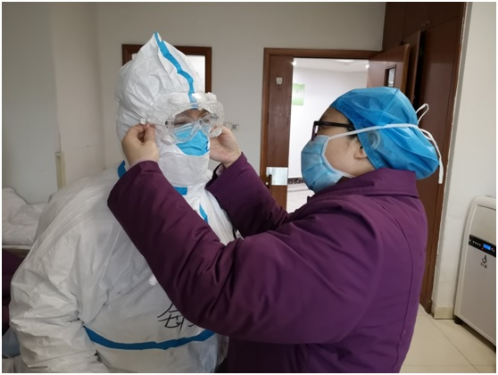
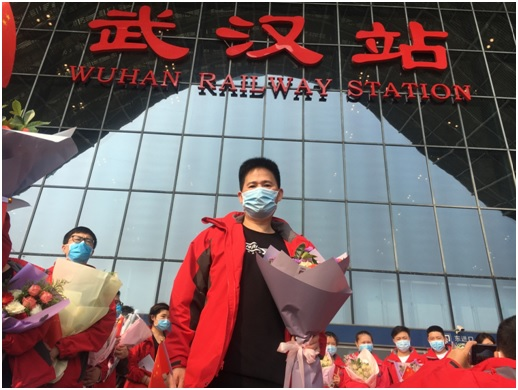
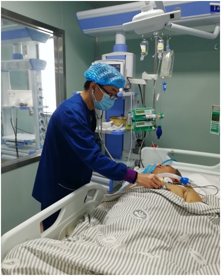

- 中共中央统一战线工作部
- 中共河南省委统战部
- 开封市统战部
- 河南大学
- "河大统战"杂志
河南大学统一战线抗疫情系列报道：凯旋归来话战“疫” 发布时间：2020-04-02 08:42:20 作者：李龙国整理 王雪艳 武利萍 杨 超 李 勇 张志伟
我是王雪艳，河南大学淮河医院感控科副科长、消化内科副主任医师，党外人士。很荣幸成为1月26日河南首批驰援医疗队中的一员，作为一名随队感控人员，我此行最主要的任务是保证医疗队全体人员的自身安全。
感控工作中最关键的就是教会医护人员正确和规范使用各类防护用品。面对这次突发公共卫生事件，面对战友们平时很少接触重装防护的实际，我深知任务艰巨。任务再大我也要扛下来，工作再难我也要做下去，而且要确保万无一失，让每名战友都平平安安去，平平安安回，在出发去武汉的路上我就暗暗下定了决心。由于情况紧急，我们一到武汉就进入了战斗状态，教会大家做好自我防护是重中之重的首要任务，好在医护人员都有防护基础，但在一些重要部位和关键环节我还是一个一个教、一遍一遍过，直人人掌握、全部过关。每天战友们进入病房前，我都要严格按照规范流程挨个检查防护用品，一丝不苟，一丝不漏，确认无误后，再逐一指导、协助和监督每个人穿戴防护用品，确定防护到位检查合格后才让他们进入病房，每个人进入病房前，我都会再三叮嘱：进入病房后一定严格按照操作流程做好防护。
等战友们全部进入工作状态后我也会进入病房，随时检查大家穿戴的防护用品有无脱位、破损等意外情况发生，全过程监督检查队友们操作流程是否规范、手卫生执行情况是否到位。为了能及时掌握战友们的身体状况，我每天都会监测医疗队全体队员进出病房前后的体温、氧饱和度、心率、血压等身体情况，并逐一记录，稍有波动，我都会高度警惕，及时询问异常情况发生的原因，有无伴随咳嗽、腹泻等症状，并及时复测，确定无异常后才安心。
来武汉四院后，我还主动联系其他4家医院的感控人员“组团作战”，共同制订了河南医疗队感染防控工作手册，详细列明感控工作的具体内容，特殊时期，不能面对面集中学习，我就整理好后在微信群发送，并根据队员们的反馈及时讨论改进，集中大家的智慧和力量把感控工作做到密不透风，做到极致。
感控工作是一个系统工程，要想确保医护人员“百毒不侵”，除了做好医护人员的自身防护，也要关注工作环境安全才行。为了保证病房环境安全，我经常进入病房检查消毒隔离措施是否落实到位，同时培训、督导和协助保洁人员正确使用防护用品，做好医疗废物的封扎运送工作。虽然日夜重复着看似枯燥、重复和繁琐的各项流程，但我却不敢有一丝一毫放松，正是因为这种认真严谨到近乎刻板的工作，才确保了此次跨省支援行动我们26名医疗工作者全员健康，零感染。
我有偏头痛的毛病，在武汉工作期间，由于工作强度大，休息不好，偏头痛经常发作，每次头一疼我就赶紧吃止痛片，一片止不住就吃两片，我知道剂量越大副作用越大，但这个时候我不能倒下，因为队友们需要我。
3月26日，是我们在武汉的第60天，这一天我们圆满完成支援任务胜利凯旋。当与并肩战斗的武汉四院的医护人员离别时，当拿到那张终点是“美丽故乡”的车票时，当看到开封人民在狂风冷雨中用最高礼遇欢迎时，我真是万千自豪，为我是一个感控人，为我是一个淮医人，更为我是一个中国人！

我是武利萍，河南大学第一附属医院消化内科一病区主任，兼内镜中心主任，副主任医师,九三学社河南大学委员会第三支社社员。
春节期间，当得知医院要组建医疗队驰援武汉时，我第一时间报了名，积极要求参加第一批驰援武汉医疗队，但由于当时队员选拔的专业要求主要是呼吸、急救和重症等，所以我未能如愿。“苟利国家生死以”，随着疫情发展形势越来越严峻，作为一名医生，这个时候我怎能缺席，从那时起我就坚持全时上班，带领本科室人员积极做好疫情防控的同时，也不放松对门诊、内镜及住院病人的管理治疗，同时继续向医院递交请战书，坚决要求参加后续支援武汉医疗队，在我的影响下，我们科多名医护人员也递交了申请书。功夫不负有心人，当医院组建第二批支援医疗队时，我有幸入选。河南大学第一附属医院第二批医疗队由27名医疗护理骨干组成，主要担负河南省省级三级医院对口支援开封市，担负开封市新冠肺炎疫情防控任务。

一开始我并没有告诉家里的老人，只告诉了我爱人，同为医生的他非常支持我。当我准备出征用品时，被同住的婆母洞悉了，老人家泪水涟涟，哽咽着劝我说：咱家孩子才两岁，你要为孩子想想啊！我宽慰婆婆说：我是医生，医生最大的梦想和最重的职责就是解除患者的病痛，在国家需要时义无反顾地站出来，妈您放心，我会照顾好自己的。在我耐心解释劝说下，老人终于理解了，并叮嘱我一定要做好防护，注意安全。风雨过后是彩虹，现在回过头来想想，心中满是感恩，谢谢家人对我工作的理解和支持，更要谢谢领导和同事们对我工作的指导和帮助，生命中有了你们，我前行的脚步会更加坚定和坚实，在未来的道路上，我会以医者仁心尽医者担当，继续以我所能为患者服务。
我是杨超，河南大学第一附属医院重症医学部主任、副主任医师、九三学社河南大学第三支社社员，也是河南首批驰援武汉危重症患者救治医疗队医师组组长。
2020年1月25日（农历大年初一），武汉乃至全国新冠肺炎疫情形势已十分严峻，在党和人民最需要的时候，作为一名重症医学工作者，为挽救更多患者的生命，我毅然报名成为了首批河南省援鄂医疗队成员。1月26日（农历大年初二）驰援武汉，经过短暂培训很快就进入了抗击新冠肺炎的前沿阵地……
在武汉持续作战60天，我感觉最自豪的就是治愈了近20名重症患者，其中最难忘的有两位，一位是56岁的女性患者，她连续高热半个月，双肺弥漫性渗出，多个器官功能不全，饮食较差、情绪低落。对此，我们利用擅长重症救治的优势，综合考虑患者全身情况，兼顾多个器官，一边帮助患者树立信心，一边采取中西医结合治疗，经过大家的共同努力，患者病情由稳定到向好，最终痊愈出院。难忘她出院时的情景，非要放在护土站100元钱，说是最不想吃饭时，是我们医护人员给她送来的香蕉等水果让她有了胃口，这是水果钱。整个病区的医护人员都为她高兴，认为是我们河南医疗队为她的成功救治创造了一个奇迹。第二位是一位63岁的男性患者，在他不睡觉的时候平均10分钟就呼叫一次医护人员，而且大多是开关电视、换电视频道、脚痒、耳朵痒、倒水、大小便等琐事，刚开始我们还以为他生活不能自理，可是后来发现他自己是能够活动的，有几次还走到了护士站，完全能够自理。我们意识到他可能存在心理问题，于是在一次夜班时，我和我们医院擅长心理疏导的曹昊泽护士一起和患者进行了沟通，得知他家庭也很不幸，自己患有慢性支气管炎，去年又患上了肺癌，40多岁的儿子前年患心梗离世，老伴也不幸患上了新冠肺炎，一个又一个沉重的打击让他心理产生了严重问题。对此，我们表示了同情，并对他进行了心理疏导，他慢慢向我们敞开心扉，倾诉以后感觉心里好多了，从那以后我们把他当成了朋友，有意无意地经常找他聊聊，时间一长，他的心理问题得到了缓解，睡眠和饮食逐渐改善，病情也日渐好转！我们注意到，在新冠肺炎救治中，帮患者树立信心、心理治疗也是很重要的一环。
援鄂60天，我们河南医疗队一起收治了近200余名患者，重症患者100多名，危重症患者10余名，出院100多名，回访满意度100%，被大河健康报誉为“战神团队”，受到河南省卫生健康委员会通报表扬，我本人也河南大学委员会评为先进个人。
我是李勇，河南大学第一附属医院中医科副主任医师，党外人士。庚子春节，一场突如其来的疫情防控阻击战，在中华大地骤然打响。病毒肆虐，严重威胁着广大人民群众的生命健康安全，武汉的疫情也牵动着我们每一个人的心。这是一场没有硝烟的战争，无论是医护人员，还是其他工作者，在疫情爆发的那一刻，大家都拿起了不同的“武器”抗击疫情，充分体现了我们中华民族万众一心、众志成城的凝聚力和向心力。
武汉封城后，有这么一群人“逆行”朝着武汉去了，他们就是全国各地的医护人员，来自河南大学第一附属医院的医生和护士们请战参与其中，用行动诠释了什么是“若有‘战’，召必回”。驰援武汉的英雄们也是血肉之躯，病毒不会因为他们是医生和护士而“网开一面“绕道而走”，但他们却因为“职责和使命”逆行而上，不计报酬，无论生死。在接到医院的报名通知后，我也第一时间报名参战，虽然最后没能参加援鄂医疗队，但我对自己面对生死不退缩，毅然决然勇向前的决定感到自豪。
疫情就是命令，防控就是责任。河南大学第一附属医院作为开封市疫情诊治定点单位，疫情发生后，及时开设发热门诊，留观疑似病例，我作为一名中国农工党党员，一名医生，也积极投入到了疑似病例诊察工作中，参与会诊讨论，及时不治病患。同时，作为一名中医师，我还结合本专业特长提出了相应的治疗方案，积极宣教，制作新冠肺炎的中医治疗文案，在网上多次向社区居民宣教，为人民群众解忧答疑。在疫情面前，我们没有一个人能置身事外，中华儿女从不畏惧任何困难，从不会退缩，我们坚信这场战争我们肯定能赢，也必须要赢。
我是张志伟，河南大学第一附属医院副主任医师。面对突如其来的新冠肺炎疫情，全国人民积极行动起来，固结一心，众志成城，勇于战疫，全社会凝聚起了气势磅礴的强大战疫力量。 “国家有难、匹夫有责”，作为一名医生，我以强烈的责任感和使命感投入到了这场全民战疫中。

二月下旬，医院接到通知要组建第二支援鄂医疗队，作为一名医务工作者，我十分清楚这次的任务与其他医疗任务大有不同，是在高度危险情况下和医学领域的新病魔搏击、抗争，这是一场没有硝烟的战争，更需要勇气、智慧和信心。我向家人说明了情况，这次疫情重症病人多，急需我们重症医学科医生，年迈的父母没有犹豫，坚定地支持我在关键时候挺身而出，但看到新闻报道中有医务人员被感染后牺牲，他们反复嘱咐我：一定要做好个人防护，自身不染病才能更好地救治病人。爱人一开始也有些不舍，毕竟家中上有已至耄耋之年的双亲，下有一岁多的儿子，都需要照顾，我能理解她的担心。经我劝说后，她最后也选择支持我报名参加医疗队。愿望成真，经医院挑选我光荣的成为援鄂医疗队队员。
在此，我要深深地感谢我的爱人和父母双亲，是他们在默默支持才让我全身心投入到了抗击新冠肺炎疫情的战役中。